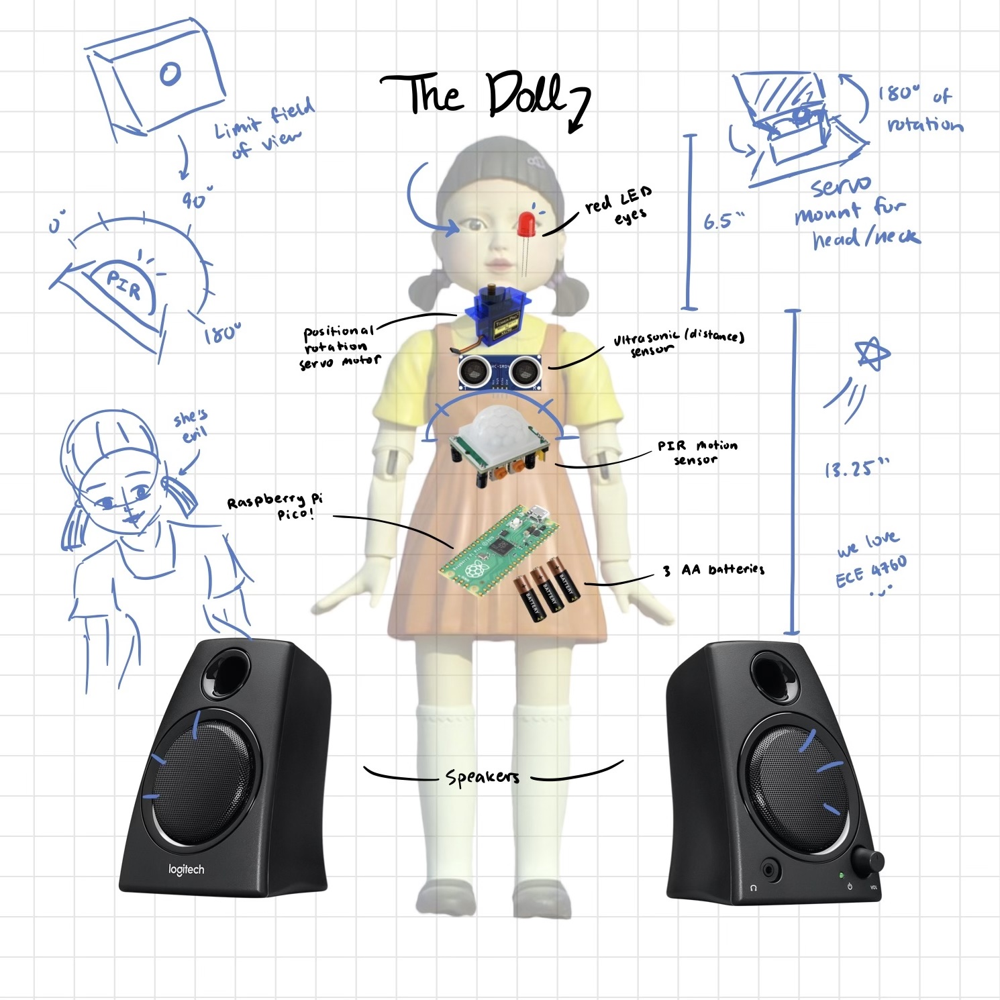
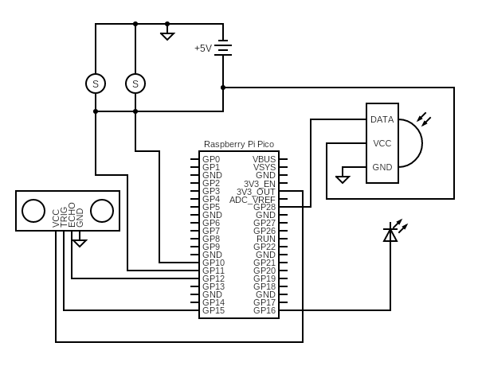

Introduction
Project: A high-stakes game of Red Light Green Light
In the popular 2021 Korean drama Squid Game, there is an iconic scene where the participants in the “game” compete in a high-stakes game of Red Light Green Light. There is a larger-than-life-sized doll which stands at the opposite side of the arena from the contestants, and their goal is to reach the doll within a limited time constraint. The challenge is that the players may only move when the doll is facing away from them, and otherwise they will be eliminated. If you’ve ever played the classic Red Light Green Light game as a child, this game goes the same way, except instead of saying the words “Red Light Green Light,” the doll sings the Korean children’s song “무궁화 꽃이 피었습니다 - When the Hibiscus Flower Blooms”. After she finishes singing, she turns around to face the players, at which point they must remain still to stay in the game. The doll repeats this pattern until time has run out, and the players who make it to the other side of the arena are the winners. The goal of our final project was to recreate this doll and give her all of the functionalities needed in order to play a real-life game of Red Light Green Light, Squid Game edition.

Rationale:
We both have an interest in Korean culture and thought it would be fun to do a project relating to the popular K-drama Squid Game. This past semester, Katherine took the Elementary Korean Language coursem and one day Tiffany was humming the children’s song from the drama. Inspiration struck and we began brainstorming how to recreate the famous, (very) high-stakes Red-Light-Green-Light game.
High Level Design
Design Components:
First, we identified the various components required for the recreation of the doll. We implemented the following features in our final project:
- 3D-Printed Doll: The doll was 3D-printed piece by piece and assembled using hot glue. The inside of the doll is hollow to allow for storage of the hardware, and there are holes in the body of the doll for peripherals such as the ultrasonic sensor, motion detector, and LEDs.
- Audio Synthesis: We used a Digital to Analog Converter to synthesize a simplified version of the Korean children’s song and play it through a headphone jack connected to a speaker.
- Servo Motors: The x-axis servo motor turns the doll’s head 180 degrees as it transitions between the Red Light and Green Light phases. A second servo motor on the y-axis is used to hold the head up during the game and allow the head to fall backwards when a player wins the game.
- PIR Motion Sensor: During the Red Light stage, we use a motion sensor to detect any movement from the players. When the motion sensor is triggered, the doll’s red LED eyes will turn on. If there are multiple players, we as the judges will have to identify the player that moved as the sensor has no way of differentiating between the players.
- Ultrasonic Sensor: During the Green Light stage, use an ultrasonic sensor to detect whether a player is close enough to the doll to win the game. If the reading on the ultrasonic sensor is below 30cm, the game will end and the player who triggered the sensor will win.
- Red and Green LEDs: The LEDs are connected to an output GPIO on the Pico. The red LED turns on when the motion sensor detects motion and the green LED turns on when the ultrasonic sensor detects when a player has reached a certain distance.
Logical Structure:
For clarity, we organized the game logic into the following states:
| State | Description |
|---|---|
State 0: Green Light - song notes play State 1: Green Light - pauses between song notes |
Green Light starts as soon as the Pico is turned on. The audio-synthesized Korean children’s song is played by alternating between State 0 and State 1 until the last note is played, at which point the state changes to State 2. The ultrasonic sensor checks if a player is within 30cm of the doll, which then triggers the state to be changed to State 3. |
State 2: Red Light - pauses between songs |
The doll turns its head 180 degrees to face the players, and the song stops playing. The PIR motion sensor checks for motion. If motion is detected, the doll’s red LED eyes light up. After 5 seconds, the state changes back to state 0. |
State 3: Win - song notes play State 4: Win - pauses between song notes |
When a player wins, the head falls backwards and the winning song is played through audio synthesis. The states alternate between state 3 and state 4. The winning song restarts once the last note is played. (The only way to end the loop of the winning song is to reset the Pico). |
Table 1: State descriptions.
Hardware Design
The hardware of this lab consists of the Raspberry Pi Pico, the Microchip Digital to Analog Converter, the audio jack socket, and Adafruit Ultrasonic Sensor, the Adafruit PIR motion sensor, the Tower Pro SG92R positional rotation servo motor, red LEDs, and the 3D-printed doll. The circuit diagrams are shown below:

Figure 1: Circuit diagram of audio jack and DAC.

Figure 2: Circuit diagram of all other components.
- The Raspberry Pi Pico uses the RP2040 microcontroller with a dual core ARM Cortex-M0+ processor. The Pico has 264kB of internal SRAM, 26 GPIO pins including 3 analog inputs, UART, SPI, I2C, PWM, USB, and Programmable I/O ports. In this lab, we use the GPIO and ADC ports of the Pico along with its provided SDK to synthesize songs.
- The MCP4822 Digital-to-Analog converter is used to convert our digitally synthesized song to an analog output to the audio socket. The DAC receives a digital signal from the Pico through GPIO pin 7, which was configured as a MOSI channel. It converts this signal to an analog waveform and outputs it through the Vout_A and Vout_B pins, which can be scoped with an oscilloscope or connected to the audio socket to play the songs.
- The audio jack socket has three pins: ground, Vin_A, and Vin_B. The Vout_A and Vout_B pins of the DAC are connected to the Vin_A and Vin_B pins of the audio socket, allowing the analog waveform to be heard as an audio signal.
- The Tower Pro SG92R servo motor has three pins: ground, power, and PWM. The servo we used is a positional rotation servo, meaning it rotates to specified angles within a maximum range of 180 degrees. In our final design, we used two microservos assembled within a mini pan-tilt kit from Adafruit.
- The PIR motion sensor has 3 pins: ground, power, and digital output. The sensor outputs data in the form of a 0 if no motion is detected and a 1 if motion is detected. The sensitivity and time delay of the sensor can be adjusted using screws on the sensor itself. The field of view of the PIR sensor is almost 180 degrees, which is too large for us since we only want to detect movement directly within the line of view of the doll. Thus, we 3D printed a box with a hole that restricts the vision of the sensor to only the desirable range.
- A serial TTY cable was also used in the debugging process. We printed text to the PuTTY monitor when testing interfacing each of the new peripherals with the system. After ensuring that we can properly control each individual component, we then began to combine them and use sensors to trigger the movement of the motor or the LEDs.
Things you tried which did not work:
When 3D-printing the head, we noticed that it was not scaled to the body. We rescaled the head and the hair; however, when we attached the head to the servo motor in the chest plate, the head would not spin. This was because the weight of the head caused it to lean forward, so the neck would rub against the chest plate walls during rotation. We would have liked to have the head attached to the body, but mechanically this was not possible. We ended up with a contraption with two servo motors and decided it would be best to keep the head decapitated from the body. Although this was not intentional, we think it adds to the disturbing theme.
Implementation
Audio Synthesis:
Audio synthesis of the children’s song was designed in 2 parts: First, we determined the frequency and duration of each of the notes in the song. Then, we generate said notes using the Pico’s ADC and output them to the audio jack.
To find the frequencies and note durations, we listened to the song by ear and transcribed the notes. Then we matched each note to its corresponding frequency with the help of an online conversion website. For the duration of each note, there were only eighth-notes and quarter-notes in our song, so we simply defined two note durations with the quarter notes being double the value of the eighth note.
To actually generate these notes in sequence, we first store the frequency and duration values we calculated in two parallel arrays. In order to generate a note, we implement Direct-Digital-Synthesis, which is where we synthesize a sine wave using a digital incrementer. We utilized our code from Lab 1 and adjusted the values of the amplitude, ramp-up and ramp-down durations, and frequency in order to produce our desired notes. Then, we simply loop through both arrays and generate each note.
In Red-Light-Green-Light, one key aspect of the game is that the timing of each stage is unpredictable. In order to keep players on their toes, the song can be played faster or slower each time. To emulate this in our game, we generate a random scaling variable which is multiplied with elements in the duration array. The range of the variable is from 0.5 to 1.5. If the array is multiplied by a number between 0.5 to 1.0, the song will play faster, and for between 1.0 to 1.5, it will be slower. This adds a randomized element to the game.
Servos:
We allocated GPIO 10 and GPIO 11 for the PWM function to the x-axis and y-axis servos respectively. Both of these GPIO pins are part of slice 5 with GPIO 10 being on channel A and GPIO 11 being on channel B. Since they are part of the same slice we configured the period of the PWM signals in our main function. This was done by knowing the CPU rate of the Pico is 125 MHz and we wanted a PWM frequency of 50 Hz based on our micro servo. We set the wrapval to 10000 and the clock div to 250 because 125 MHz divided by 10000 and divided again by 250 gets us to 50 Hz. Afterwards we estimated what duty cycle to set the servos to turn to a specific position between 0 degrees and 180 degrees.
PIR Motion Sensor:
The PIR Motion Sensor is connected to GPIO 28 as an input with a software implemented pull-up resistor. The PIR sensor returns 1 when it detects movement and returns 0 when there is no movement. On the PIR sensor there are two settings that can be adjusted, one for sensitivity and one for delay. We made sure to set both of these settings to their minimum value so we could get information from the PIR sensors as quickly as possible.
Ultrasonic Sensor:
The ultrasonic sensor data is read to determine if a player has reached the doll and won the game. If the ultrasonic sensor reads in values of less than 30cm, which is our predetermined “winning range,” we transition to the Win state. It was tricky to program the transition to the Win State. Our original logic was to check if the ultrasonic sensor detected a measurement of less than 30cm. However, we noticed during the transition of going between red light and green light the ultrasonic sensor senses 0 cm. In order to work around this, we implemented a for loop that takes 3 measurements and determines whether or not all three were within the winning range. If they all are then we transition to the Win State, if not then we transition back to red light.
LEDs:
The red LEDs for the doll’s eyes are in a simple LED circuit with a 1kOhm resistor and two red LEDs in parallel with each other. The red LEDs light up when the GPIO 16 is driven high. The green LED on the Pico (GPIO 25) was mainly used when we were testing our implementation for the green light stage.
Software Design
Below is a description of the threads, ISRs, functions, and main variables in our code:
| Code | Description |
|---|---|
void head_forward() |
Function that sets the x-axis servo’s duty cycle to 400 which rotates the servo to the 0 degree position for the head to face forward. Channel A corresponds to the x-axis servo. Gets called in protothread_squid_game() |
void head_backward() |
Function that sets the x-axis servo’s duty cycle to 1150 which rotates the servo to the 180 degree position for the head to face forward. Gets called in protothread_squid_game() |
void head_up() |
Function that sets the y-axis servo’s duty cycle to 500 which rotates the servo to approximately the 0 degree position for the head to be upright. Channel B corresponds to the y-axis servo. Gets called in protothread_squid_game() |
void head_fall() |
Function that sets the y-axis servo’s duty cycle to 1100 which rotates the servo to approximately the 170 degree position for the head to fall backwards. Gets called in protothread_squid_game() |
int getPulse() |
Ultrasonic sensor helper function from KleistRobotics: Sets the ultrasonic sensor’s trigger to low then high then low to send out a short pulse. Then loops to check when the echo pin receives the pulse. Returns the time difference between the trigger sending out the pulse and the echo receiving the pulse. Gets called in getCm() |
int getCm() |
Ultrasonic sensor helper function from KleistRobotics: Converts the pulse length in microseconds from calling getPulse() into centimeters. Gets called in ultrasonic_sensing() |
void ultrasonic_sensing() |
Function to check for ultrasonic sensing. Takes three measurements and if the player is within 30cm from the sensor a counter is incremented. If the counter is greater than 2 for those three readings, then turn on the green LED and set the state to 3 meaning the player has won the game. If not, turn off the LED. (the LED was for debugging purposes) Gets called in protothread_squid_game() |
void pir_sensing() |
Function to check if the PIR motion sensor detected movement. If PIR returns a 1, motion is detected and turns on the red LED. If not, turn off the red LED. Gets called in protothread_squid_game() |
static PT_THREAD (protothread_squid_game(struct pt *pt)) |
Main thread running on core 0 for entire game logic with a forever loop. Broken down into three sections: Red light (state 2) • Turns off green LED • Keeps head upright • Rotates head 180 degrees to face forward • Calls pir_sensing for motion detection Green light (states 0 and 1) • Turns off red LED • Keeps head upright • Rotates head 180 degrees to face backwards • Calls ultrasonic_sensing for distance detection Winning (states 3 and 4) • Turns off green LED • Turns off red LED • Rotates head to fall down |
bool repeating_timer_callback_core_0(struct repeating_timer *t) |
SR on core 0 for audio synthesis of both songs. Depending on the state a note frequency or pauses will be played. State 0: Green Light - song notes play • For each note frequency in the song calculate the incrementer, accumulator, and DAC output. • Ramp up and ramp down the amplitude for each note’s duration so the amplitude does not abruptly change. • Increments a counter variable to keep track of how long it should remain in this state (depends the duration of the note multiplied by a random speed). • Increments the song index for the arrays. Transitions to state 1 if the song is not over and resets the counter. Transitions to state 2 when the song is complete, resets the counter and song index. State 1: Green Light - pauses between song notes • Increments the count variable. • Checks if the counter equals the duration of the pause multiplied by the random speed. • Resets the counter and sets the amplitude and state to 0. State 2: Red Light - pauses between songs • Increments the count variable • Checks if the counter equals the duration of the pause multiplied by the random speed • Resets the counter and sets the amplitude and state to 0 • Calculates the random speed to be between 0.5 and 1.5 State 3: Win - song notes play • For each note frequency in the winning song calculate the incrementer, accumulator, and DAC output • Ramp up and ramp down the amplitude for each win note’s duration so the amplitude does not abruptly change • Increments a win counter variable to keep track of how long it should remain in this state (depends the duration of the note multiplied by a random speed) • Increments the win song index for the arrays. Transitions to state 4 if the win song is not over and resets the win counter and when the song is complete, resets the counter and win song index. 4. State 4: Win - pauses between song notes • Increments the count variable • Checks if the counter equals the duration of the win note pause • Resets the counter and sets the amplitude and state to 3 |
int main() |
Configuration of GPIO for PWM, ultrasonic sensor, LEDs, PIR motion sensor, SPI signals and DAC. Configures the period for the PWM signals and starts the channel. For the audio synthesis, random is based on the time_us_32() clock. Initializes the SPI channel, increments for calculating the audio bow envelope, builds the sine look up table, creates and adds the repeating timer that calls the repeating_time_callback_core_0. Adds the protothread_squid_game to core one and starts the scheduled thread. |
Table 2: Software descriptions.
Results
Video 1: Integrated hardware components outside of doll body.
Video 2: Demo video!
Conclusion
Reflection and Next Steps
The final design is a little different from our initial idea, but it is pretty close. The main difference is the placement of the head, which is decapitated from the body. Next time, we would look more into the design of the 3D printed doll and alternative ways to attach the head to the body using the servo motor or possibly another motor.
Some next steps for the project would be to improve the user interface of the game. We could implement buttons to start and restart the game instead of relying on turning the Pico on and off. The game could also run more smoothly if there is a limited amount of time per game, which could be implemented by displaying how much time is left before all the remaining players lose on a 7-segment display. Right now, the game mainly works for a single player, especially since the motion sensor cannot differentiate which player moves, and the game ends after one player wins. Being able to make the game more accessible to multiple players would help make the game more engaging. Also, pointing a laser at the eliminated player in addition to lighting up the doll’s eyes would be cool. Our classmates Liam and Jonas created a Auto-aiming Nerf Turret, and we have schemed to combine our projects for Cornell’s engineering fair next semester.
Intellectual Properties
We used the 3D printed .stl files modified by Jason Altice P.E. from CodeMakesItGo, who created a similar project. We followed a tutorial from “Tom’s hardware” on how to use the PIR motion sensor with the Raspberry Pi Pico. We also followed a tutorial by “Kleist Robotics” and used his getPulse() and getCm() functions from his Github repository to measure the distance with the ultrasonic sensor. Links to these resources are included in Appendix D.
Appendices
Appendix A: Permissions
The group approves this report for inclusion on the course website.
The group approves the video for inclusion on the course youtube channel.
Appendix B: Code Files
The complete commented code files can be found here.
Appendix C: Distribution of Work
We worked on the majority of the project together during our Friday lab hours and during open lab hours. Katherine focused more on the integration, debugging, and documentation of the software controlling all the peripherals, while Tiffany focused more on integrating and documenting the hardware components and debugging the mechanics of the doll’s head.
 Image 1: The team :D!
Image 1: The team :D!
Appendix D: Resources
We are very grateful for all the amazing resources and people that helped us complete this project! Special thanks to Smith Charles from the Maker Lab, Dr. Hunter Adams, Dr. Bruce Land, and our TAs for all their help :)
CodeMakesItGo (.stl files of doll): CodeMakesItGo
KleistRobotics (Ultrasonic Sensor): KleistRobotics
Tom’s Hardware (PIR motion sensor with Pico): Tom’s Hardware
ECE 4760 Course Website: Our favorite class <3
Appendix E: Budget / Vendor sites
The only thing we ordered was the PIR motion sensor. Everything else we were able to borrow from the ECE 4760 and ECE 3400 lab. Also a huge shoutout to Smith Charles for helping us 3D-print the doll in the Maker Club.
| Part | Cost | Vendor | Link |
|---|---|---|---|
| 3D-Printed Doll | $10-12 | Maker Club | N/A |
| PIR Motion Sensor | $10 | Adafruit | link |
| Ultrsonic Sensor | $4.50 | SparkFun | link |
| Mini Pan-Tilt Kit for Micro Servos |
$18.95 | Adafruit | link |
| Raspberry Pi Pico | $5.67 | DigiKey | link |
| DAC | $4.31 | DigiKey | link |
| Audio Socket | $0.7568 | DigiKey | link |
| AUX cable | $4.35 | DigiKey | link |
Table 3: Parts list.
Appendix F: Datasheets
Raspberry Pi Pico Datasheets:
RP2040 |
C SDK |
Pico |
Pinout
Ultrasonic Sensor
PIR Motion Sensor